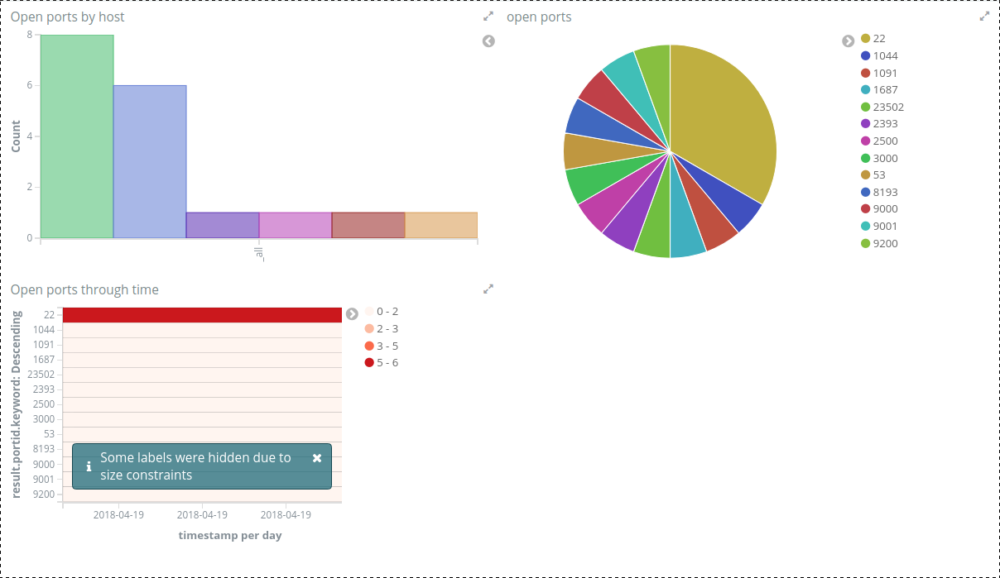
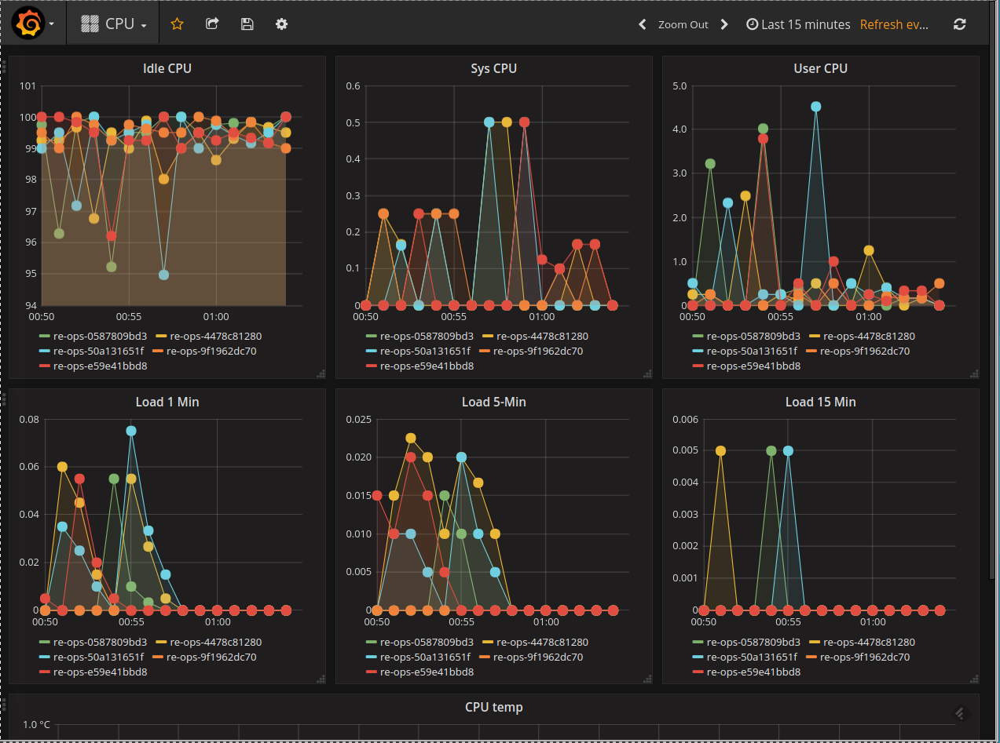
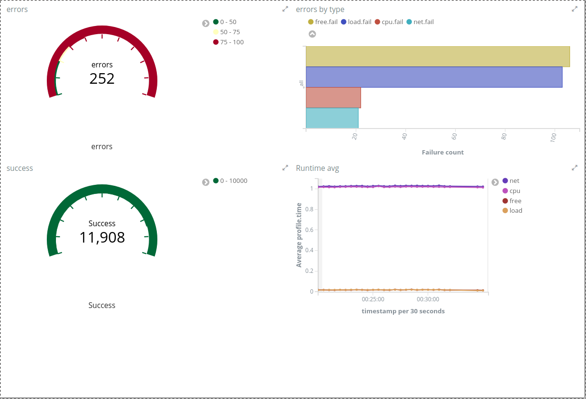

Re-ops
One Repl to rule them all
Created by Ronen Narkis / @narkisr settings
Operations
The process of managing computerized resources
by manipulating their state
What do we need?
Ad hoc operations
Scheduled operations
Provisioning
VM Orchestration
Remoting
Data collection and analysis
Existing issues
Language shoehorned into a data format
Behaviour over data
Slow dev/deploy cycle
Extension is too hard
Re-ops
Live environment for managing servers
Composed from Re-core Re-mote Re-gent and Re-conf
No magic just functions with a dash of macros.
Reloaded workflow
Re-define function/ns or refresh/refresh-all
Refresh works across threads
Refresh resets all state (atoms)
Protocol changes require refresh
Reloaded functions
(ns user
[clojure.tools.namespace.repl :refer (refresh refresh-all)]
....
)
; start the system
(go)
; halt the system
(stop)
; stop and go
(reset)
Re-mote
Remote automation (SSH/ZeroMQ)
Scheduled execution
Data collection and persistence
Hosts
(def development (Hosts. {:user "ronen"} ["host-a" ,,,,]))
(defprotocol Shell
(ls [this target flags]))
(extend-type Hosts
Shell
(ls [this target flags]
; implementation
))
(defn listing [hs]
(run (ls hs "/" "-la") | (pretty)))
Pipelines
Series of functions (operations)
Data flows from one function to the next
Intermediate functions operate on data
Final function output, persist, block/run async etc..
Composable (just functions)
Pipeline expansion
filtering output
^ ^
(defn listing [hs] | |
(run (ls hs "/" "-la") | (pick successful) | (pretty)))
|
V
(| (| (ls ..) (pick ..)) (pretty))
|
V
; res is {:successful [], :failure []}
(let [[this' res] (ls hs)]
(pick this' res))
Pipeline data
(s/def ::operation-result
(s/keys
:req-un [::success ::failure ::hosts ::hosts]))
(s/def ::auth
(s/keys
:opt-un [::ssh-key]
:req-un [::user]))
(s/def ::hosts-entity
(s/keys :req-un [::auth ::hosts]))
(s/def ::pipeline
(s/tuple ::hosts-entity ::operation-result))
Re-mote
{kind=link}
Scheduling
; every day on 10 AM
(defn apt-jobs [hs]
(watch :update (every-day 10) (fn [] (aptdate hs))))
; every 5 seconds
(defn stats-jobs [hs]
(watch :net (seconds 2) (fn [] (net-persist hs)))
(watch :cpu (seconds 5) (fn [] (cpu-publish hs))))
; Saturday 4 AM
(defn zfs-jobs [hs]
(watch :scrub (at-day DateTimeConstants/SATURDAY 4)
(fn [] (run (scrub hs "tank") | (email "scrub done")))))
Shelling out
(let [target "/" flags "-la"]
(script ("ls" ~target ~flags))); => expands into ls / -la
Free
(defn free-script []
(script
(set! R @("free" "-m"))
(if (not (= $? 0)) ("exit" 1))
(pipe
((println (quoted "${R}")))
("awk" "'NR==2 { print $2 \" \" $3 \" \" $4 }'"))))
Re-core
AWS, DigitalOcean, KVM
Pipeline/Protocol pattern
Fluent interface
Persistent (ES)
Queue with Workers pool
Systems
(def systems (Systems.))
(defn start
([]
(start (comp not ip)))
([f]
(run (ls systems) | (filter-by f) | (sys/start))))
^
|
[this, {:systems [...]}]
Systems model
{
:machine {
:hostname "reops" :user "re-ops" :domain "local"
:os :ubuntu-16.04 :cpu 2 :ram 1024
}
:kvm {
:node :remote
}
:type "re-ops"
}
Types model
{
:re-conf {
:src "re-ops.js"
:args []
}
:description "Re-gent target"
:type "re-ops"
}
VM control
(list) ; list all systems
(list ip) ; list all systems that have an ip (running)
(list identity :types) ; list all types
(start (comp not ip))) ; no ip = down
(reload (by-type :redis)); matching type
(destroy (matching "Fstr")); id matching
(provision
(fn [[id m]] (> 2 (get-in m [:machine :cpu]))))
Into hosts
(hosts); All Systems as Hosts
(hosts (matching "foo") :ip) ; single host access with ip
(hosts (by-type :redis) :hostname); redis using hostname
(upgrade (hosts)); upgrade all
Presets
(create kvm-small :redis) ; redis kvm instance
(create kvm-small :redis 5) ; 5 in one go
(create kvm-small :redis "furry") ; custom hostname
(create kvm-small vol-128G :redis) ; 128G Volume
(create t2-nano :redis) ; AWS t2 nano
(create t2-nano ebs-128G :redis) ; 128G EBS Volume
Re-core VMs
{kind=link}
Spice and SSH

Browsify

Re-gent
Persistent connections (ZeroMQ)
Secure (CurveZMQ)
Distributed Clojure functions
Easy to deploy (single binary)
Interchangeable with SSH
Distributed functions
Serialized
Support reload workflow
Shared classpath
A Function
; using serializable.fn
(def ^{:doc "adding one"} plus-one
(s/fn [x] (+ 1 x)))
(call plus-one [1] hs)
Re-gent pipeline
(defn add-one [hs i]
(run (plus-one hs i) | (pretty "Added one")))
(defn update
"Update with downgrading"
[hs]
(run (z/update hs) | (downgrade s/update) | ...)))
Re-gent in use
{kind=link}
Nmap
(defn nmap [path flags hosts]
(let [{:keys [exit out err] :as res} (sh ... "-oX")]
(if (= 0 exit)
(dx/parse-str out)
(throw (ex-info "failed to scan"
{:result res ...})))))
Nmap pipeline
(defn #^{:category :security} nmap-scan
[hs flags network]
(run (scan hs flags network) | ... | (persist)))
(nmap-scan sentry "-T5" "192.168.122.0/24")
{:success [
{:code 0
:host "foo"
:result {:name "tor-orport" :portid "9001" :state "open"}
:timestamp 1524666955996
:type "nmap-scan"
:uuid "d61358e147384d98b8fdda6e7ccb250b"}
]}
Nmap dashboard
Metrics
(defn #^{:category :stats} ram-persist [hs]
(run (cpu hs) | (enrich "cpu") | (persist)))
|
V
ES type and timestamp
Cpu Dashboard
Kibana Results
Re-conf
Provisioning recipes
Clojurescript
Concurrent
Tracing and profiling
A recipe
(defn packer
"Setup up packer"
[]
(let [dest "/tmp/packer_1.2.2_linux_amd64.zip"
sha "6575f8357a03ecad7997151234b1..."
url "https://releases.hashicorp.com/..."]
(->
(download url dest)
(checksum dest sha :sha256)
(unzip dest "/tmp/packer")
(summary "installing packer done"))))
Resource
(defn run-checkum [f expected k]
(let [c (chan)
stream (.ReadStream fs f)
shasum (.createHash crypto (name k)]
...
(.on stream "end" (fn [] (put! c ...)))
c))
(defn checksum
"Checksum a file and check expected value"
([file e k]
(checksum file e k))
([c file e k]
(run c #(checkum file e k))))
Development Workflow
Launch VM
Launch REPL
Mount share folder
Connect to remote REPL
Future
Re-spec
IoT (Wemo Mqtt)
Host queries (OSquery and ES)
Repl enhancements (history and completion)
Questions ?
Settings
Select theme:
Black (default) -
White -
League -
Sky -
Beige -
Simple
Serif -
Blood -
Night -
Moon -
Solarized